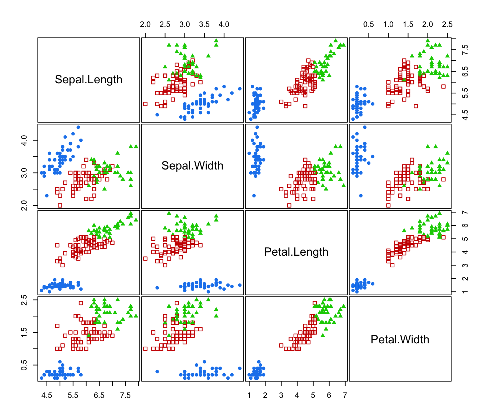

hc.RdAgglomerative hierarchical clustering based on maximum likelihood criteria for Gaussian mixture models parameterized by eigenvalue decomposition.
hc(data,
modelName = "VVV",
use = "VARS",
partition = dupPartition(data),
minclus = 1, ...)A numeric vector, matrix, or data frame of observations. Categorical variables are not allowed. If a matrix or data frame, rows correspond to observations (\(n\)) and columns correspond to variables (\(d\)).
A character string indicating the model to be used in model-based agglomerative hierarchical clustering.
Possible models are:
"E"equal variance (one-dimensional);
"V"spherical, variable variance (one-dimensional);
"EII"spherical, equal volume;
"VII"spherical, unequal volume;
"EEE"ellipsoidal, equal volume, shape, and orientation;
"VVV"ellipsoidal, varying volume, shape, and orientation (default).
If hc() is used for initialization of EM algorithm then the default is taken from mclust.options("hcModelName"). See mclust.options.
A character string specifying the type of input variables/data transformation to be used for model-based agglomerative hierarchical clustering.
Possible values are:
"VARS"original variables (default);
"STD"standardized variables (centered and scaled);
"SPH"sphered variables (centered, scaled and uncorrelated) computed using SVD;
"PCS"principal components computed using SVD on centered variables (i.e. using the covariance matrix);
"PCR"principal components computed using SVD on standardized (center and scaled) variables (i.e. using the correlation matrix);
"SVD"scaled SVD transformation.
If hc() is used for initialization of EM algorithm then the default is taken from mclust.options("hcUse"). See mclust.options.
For further details see Scrucca and Raftery (2015).
A numeric or character vector representing a partition of
observations (rows) of data.
If provided, group merges will start with this partition.
Otherwise, each observation is assumed to be in a cluster by itself
at the start of agglomeration.
Starting with version 5.4.8, by default the function
dupPartition is used to start with all duplicated
observations in the same group, thereby keeping duplicates in the
same group throughout the modelling process.
A number indicating the number of clusters at which to stop the agglomeration. The default is to stop when all observations have been merged into a single cluster.
Arguments for the method-specific hc functions. See for example
hcE.
The function hc() returns a numeric two-column matrix in which
the ith row gives the minimum index for observations in each of
the two clusters merged at the ith stage of agglomerative
hierarchical clustering. Several other informations are also returned
as attributes.
The plotting method plot.hc() draws a dendrogram, which can be based
on either the classification loglikelihood or the merge level (number of
clusters). For details, see the associated help file.
Most models have memory usage of the order of the square of the
number groups in the initial partition for fast execution.
Some models, such as equal variance or "EEE",
do not admit a fast algorithm under the usual agglomerative
hierarchical clustering paradigm.
These use less memory but are much slower to execute.
If modelName = "E" (univariate with equal variances) or
modelName = "EII" (multivariate with equal spherical
covariances), then underlying model is the same as that for
Ward's method for hierarchical clustering.
Banfield J. D. and Raftery A. E. (1993). Model-based Gaussian and non-Gaussian Clustering. Biometrics, 49:803-821.
Fraley C. (1998). Algorithms for model-based Gaussian hierarchical clustering. SIAM Journal on Scientific Computing, 20:270-281.
Fraley C. and Raftery A. E. (2002). Model-based clustering, discriminant analysis, and density estimation. Journal of the American Statistical Association, 97:611-631.
Scrucca L. and Raftery A. E. (2015). Improved initialisation of model-based clustering using Gaussian hierarchical partitions. Advances in Data Analysis and Classification, 9/4:447-460.
hcE, ...,
hcVVV,
plot.hc,
hclass,
mclust.options
hcTree <- hc(modelName = "VVV", data = iris[,-5])
hcTree
#> Call:
#> hc(data = iris[, -5], modelName = "VVV")
#>
#> Model-Based Agglomerative Hierarchical Clustering
#> Model name = VVV
#> Use = VARS
#> Number of objects = 150
cl <- hclass(hcTree,c(2,3))
table(cl[,"2"])
#>
#> 1 2
#> 50 100
table(cl[,"3"])
#>
#> 1 2 3
#> 50 64 36
# \donttest{
clPairs(iris[,-5], classification = cl[,"2"])
clPairs(iris[,-5], classification = cl[,"3"])

# }